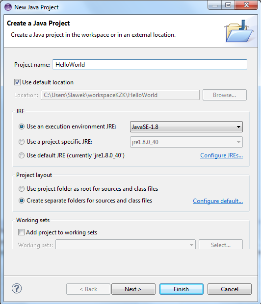
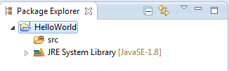
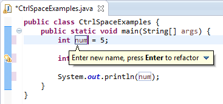

Wprowadzenie do języka Java¶
W lekcji tej dowiesz się:
- jak używać środowiska eclipse
- co powstaje w wyniku kompilacji kodu źródłowego napisanego w języku Java
- jak uruchamiać swoje programy
- czym są zmienne
- jakie są podstawowe typy danych w Javie
- jak wykonywać podstawowe operacje arytmetyczne
Podczas lekcji nauczyciel powinien krótko omawiać daną sekcję pod względem teoretycznym, a następnie omawiać prezentowane przykłady, prosząc z wyprzedzeniem uczniów o sugestie tego jak zapisać dalszy fragment kodu źródłowego. Uczniowie powinni pisać kod jednocześnie na swoich komputerach, aby móc obserwować wynik działania aplikacji. Lekcja kończy się zadaniem do samodzielnego wykonania, które należy wykonać na zajęciach lub dokończyć samodzielnie w domu.
Eclipse IDE¶
Eclipse to najpopularniejsze środowisko programistyczne wśród programistów Java. Jego głównymi zaletami z punktu widzenia osoby początkującej jest wykrywanie błędów w trakcie pisania kodu a także podpowiadanie składni wraz z możliwością generowania i prostej modyfikacji (refaktoryzacji) kodu źródłowego. Wszystko to składa się przede wszystkim na znaczną oszczędność czasu.
Przy pierwszym uruchomieniu środowiska zostaniemy zapytani o wskazanie folderu “workspace” - jest to folder, w którym przechowywane będą tworzone przez nas projekty. Zalecamy zostawić tę lokalizację domyślną.

Na powyższym zrzucie ekranu widać domyślny widok, który zastaniemy po uruchomieniu środowiska eclipse. Można w nim wyróżnić 4 główne obszary:
- Package Explorer - w tym miejscu będziemy widzieli wszystkie projekty, które zapisane są w folderze workspace oraz ich strukturę w postaci rozwijanego drzewa
- Obszar oznaczony numerem 2 to główna część robocza - w tym miejscu będziemy edytowali kod źródłowy aplikacji
- Outline - to skrótowy podgląd danego pliku i elementów w nim zawartych (zmienne, metody/funkcje)
- W dolnej części ekranu znajduje się kilka zakładek. Najważniejsza z nich to Problems, która pokazuje wszelkie błędy i ostrzeżenia występujące w kodzie źródłowym. W tym miejscu zobaczymy także dodatkową zakładkę Console z wydrukami generowanymi przez nasze aplikacje.
Pierwszy Projekt¶
W celu utworzenia nowego projektu wybieramy opcję File -> New -> Java Project
Wpisujemy dowolną nazwę projektu w polu Project name a także wybieramy wersję maszyny wirtualnej (JRE), na jakiej ma być uruchomiony nasz program (domyślnie JavaSE-1.8). Klikamy Finish.
W obszarze Project Explorer pojawi się nowo utworzony projekt:
Widzimy tu folder src, w którym umieszczane będą pliki z kodem źródłowym, a także dołączoną wirtualną maszynę, na której nasz projekt będzie uruchamiany.
Teraz należy utworzyć plik, w którym będziemy edytowali kod źródłowy. W dalszej częściu kursu będziemy mówili krótko o tworzeniu nowej klasy. Klasa jest pojęciem związanym z programowaniem obiektowym, które będzie głównym zagadnieniem kolejnej lekcji.
Kliknij prawym przyciskiem na folderze src i wybierz opcję New -> Class. Można także posłużyć się wygodnym skrótem i skorzystać z przycisku z symbolem C, który znajdziemy na górnym pasku nawigacyjnym.

W kreatorze klasy wymagane jest podanie jedynie nazwy klasy. My jednak zaznaczymy także opcję przy public static void main(String[] args).

Note
Nazwy klas rozpoczynaj zawsze wielką literą a jeżeli nazwa składa się z kilku wyrazów to je także rozpoczynaj wielką literą, np. NazwaTwojejKlasy albo ThisIsMyClass. Pamiętaj także, że nazwa klasy musi być identyczna z nazwą pliku, w którym ta klasa się znajduje (eclipse zadba o to automatycznie).
W naszym przypadku nazwą klasy jest FirstClass.
Attention
Zapamiętaj, że w Javie nazwy klas i wielkość używanych liter, mają znaczenie. “NazwaKlasy” i “nazwaKlasy” będą potraktowane jako dwa zupełnie różne elementy.
W utworzonej przez nas klasie został wygenerowany następujący kod źródłowy:
plik FirstClass.java
1 2 3 4 5 6 7 8 | public class FirstClass {
public static void main(String[] args) {
// TODO Auto-generated method stub
System.out.print("Witaj Świecie!");
}
}
|
W linii 1 widzimy definicję klasy. Klasę definiujemy za pomocą słowa kluczowego class, po którym następuje jej nazwa. Eclipse automatycznie oznacza ją jako publiczną za pomocą słowa kluczowego public, co najprościej można wytłumaczyć jako możliwość jej wykorzystania z dowolnego miejsca w naszym projekcie.
W wierszu 3 widzimy zapis public static void main(String[] args), czyli publiczną, statyczną metodę o nazwie main, która nie zwraca żadnego wyniku (void). Element umieszczony w nawiasie, czyli String[] args to argument metody main w postaci tablicy - więcej na ten temat powiemy w dalszej części lekcji.
Note
Zapamiętaj, że od metody main rozpoczyna się działanie każdej aplikacji napisanej w języku Java. Jeżeli nie zdefiniujesz takiej metody w swojej klasie, to nie będziesz w stanie uruchomić programu.
Zauważ, że zarówno definicja klasy jak i metody rozpoczyna się i kończy nawiasami klamrowymi. Nawiasy klamrowe znacznie podnoszą czytelność kodu, szczególnie, gdy klasa składa się z kilkuset, czy nawet kilku tysięcy wierszy.
W metodzie main znajduje się jeden wiersz komentarza poprzedzony znakiem podwójnego ukośnika.
Note
Komentarze w języku Java można zapisywać na dwa sposoby. Jeżeli komentarz ma zajmować jedynie jeden wiersz, poprzedź go znakiem podwójnego ukośnika. Jeżeli będzie dłuższy umieść komentarz w bloku /* komentarz */ Komentarze są pomijane w trakcie kompilacji programu i nie mają wpływu na jego działanie.
Po komentarzu dopisaliśmy także linijkę o treści System.out.print(“Witaj Świecie”);, która wydrukuje na ekranie tekst podany w nawiasie, czyli Witaj Świecie.
Note
Zapamiętaj, że każda linijka z wyrażeniem (np. drukowaniem tekstu) w języku Java musi kończyć się średnikiem.
W celu uruchomienia programu wybierz z górnego paska nawigacyjnego charakterystyczny przycisk z symbolem strzałki (Run) lub po prostu użyj skrótu klawiaturowego Ctrl+F11.
W tym momencie w dolnej części eclipse powinno się pojawić okno konsoli (Console) z wydrukiem naszego tekstu.

Typy danych¶
W Javie tak jak w praktycznie każdym języku programowania istnieją różne typy danych. Typ danych to opis tego co reprezentuje dana wartość. Z powodu budowy komputera rozróżnia się liczby całkowite, liczby zmiennoprzecinkowe, znaki, ciągi znaków.
- boolean - typ logiczny. Może przyjmować jedynie dwie wartości - true (prawda) lub false (fałsz).
- byte, short, int, long - typy całkowitoliczbowe. Różnią się zakresem wielkości liczby jakie mogą przechowywać (od najmniejszego do największego) - np. 1, 5, 10, 3456.
- float, double - typy zmiennoprzecinkowe o różnym zakresie (double może przechowywać większe liczby). Separatorem dziesiętnym jest kropka, np. 3.14, 276.24563.
- char - typ znakowy, reprezentuje pojedyncze litery lub znaki. Wartości tego typu umieszczamy pomiędzy znakami pojedynczego cudzysłowu, np. ‘a’, ‘&’.
- String - (pisany z wielkie litery) - specjalny typ, który służy do przechowywania ciągów znaków. Ciągi znaków zapisujemy pomiędzy podwójnymi cudzysłowami, np. “Ania”, “Jakiś dowolny tekst”.
Ćwiczenie (5 min)
Napisz program, który wydrukuje na ekranie następujące wartości (wykorzystaj różne typy danych):
245
123.456
a
Java jest cool
plik DataTypes.java
1 2 3 4 5 6 7 8 | public class FirstClass {
public static void main(String[] args) {
System.out.println(245);
System.out.println(123.456);
System.out.println('a');
System.out.println("Java jest cool");
}
}
|
Zmienne¶
Drukowanie danych, na których nie możemy wykonywać żadnych działań, czy po prostu zapamiętać w pamięci komputera nie byłoby zbyt użyteczne. Na szczęście w Javie możemy tworzyć tzw. zmienne, czyli takie elementy, które pozwalają na przechowywanie wartości różnych typów danych. Java w odróżnieniu od np. PHP jest językiem statycznie typowanym co oznacza, że zmienna musi mieć określony typ. Jeżeli chcesz przechowywać w niej wartość zmiennoprzecinkową, to nie możesz jej zadeklarować jako int, ponieważ spowoduje to błąd kompilacji.
Tworzenie zmiennej możemy podzielić na dwa etapy:
- deklarację - w tym momencie następuje zaalokowanie pamięci w komputerze
- inicjalizację (inicjację) - w tym momencie następuje przypisanie konkretnej wartości do zmiennej
Dwa wyżej wspomniane etapy mogą być od siebie oddzielone lub też można je połączyć ze sobą.
plik Variables.java
1 2 3 4 5 6 7 8 9 10 11 12 13 14 15 16 17 18 19 | public class Variables {
public static void main(String[] args) {
// deklaracja zmiennych różnego typu
int x;
double num;
char letter;
String napis;
// inicjalizacja zmiennych
x = 5;
num = 12.67;
letter = 'b';
napis = "To może być bardzo długie zdanie";
// deklaracja połączona z inicjalizacją
int y = 15;
String zdanie = "To jest przykładowe zdanie";
}
}
|
Ćwiczenie (5 min)
Napisz program podobny do tego z poprzedniego zadania - wydrukuj na ekranie kilka wartości różnego typu, ale tym razem skorzystaj także ze zmiennych.
plik DataTypesVars.java
1 2 3 4 5 6 7 8 9 10 11 12 13 | public class DataTypesVars {
public static void main(String[] args) {
int num1 = 123;
double num2 = 567.123;
char b = 'b';
String name = "Jan Kowalski";
System.out.println(num1);
System.out.println(num2);
System.out.println(b);
System.out.println(name);
}
}
|
Operacje arytmetyczne i logiczne¶
Jednymi z najważniejszych elementów w jakich wykorzystujemy komputery są obliczenia. Nie zawsze muszą to być skomplikowane rachunki matematyczne - czasami chcemy coś po prostu przesunąć o 1 piksel w prawo na ekranie (np. w grach), a innym razem zwiększyć wiek użytkownika o 1, gdy ma urodziny.
W języku Java znajdziemy wszystkie najpopularniejsze operatory arytmetyczno logiczne:
- +, - - dodawanie i odejmowanie liczb
- *, / - mnożenie i dzielenie całkowite liczb
- % - dzielenie modulo (reszta z dzielenia)
- && - koniunkcja logiczna. Tylko PRAWDA && PRAWDA da w wyniku PRAWDA
- || - alternatywa logiczna. Co najmniej jedna składowa musi być PRAWDĄ, aby wynik całego wyrażenia był prawdą. PRAWDA||PRAWDA lub PRAWDA||FAŁSZ lub FAŁSZ||PRAWDA ale nie FAŁSZ||FAŁSZ
- >, >=, <, <= - porównania. Większe, większe lub równe, mniejsze, mniejsze lub równe.
- == - porównanie równości
Wyniki wyrażeń arytmetyczno logicznych mogą być obliczane na podstawie zmiennych lub wartości, a także przypisywane do innych zmiennych.
plik Arithmetic.java
1 2 3 4 5 6 7 8 9 10 11 12 13 | public class Arithmetic {
public static void main(String[] args) {
int num1 = 5;
int num2 = 3;
//jaki jest wynik działania num1*num2 ?
int num3 = num1 * num2;
System.out.println(num3);
//czy zmienna num1 jest większa od 3 ?
boolean validate = num1 > 3;
System.out.println(validate);
}
}
|
Znak dodawania (+) ma również specjalne zastosowanie w przypadku ciągów znaków (typ String). Powoduje on złączenie (konkatenację) dwóch ciągów znaków i utworzenie na ich podstawie nowego napisu.
String napis = "Jan" + "Kowalski";
Ćwiczenie (10 min) Napisz prosty kalkulator. Zadeklaruj i zainicjuj dwie liczby typu zmiennoprzecinkowego a następnie wyświetl na ekranie wynik ich dodawania, odejmowania, mnożenia i dzielenia. Dodatkowo wyświetl na ekranie, czy pierwsza z liczb jest większa od drugiej, a także, czy ich iloczyn jest większy od 100. Przykładowy wydruk programu:
a + b = 28.3
a - b = 18.7
a * b = 112.8
a / b = 4.895833333333334
A > B ?true
A * B > 100 ? true
plik SimpleCalculator.java
1 2 3 4 5 6 7 8 9 10 11 12 13 | public class SimpleCalculator {
public static void main(String[] args) {
double a = 23.5;
double b = 4.8;
System.out.println("a + b = " + (a + b));
System.out.println("a - b = " + (a - b));
System.out.println("a * b = " + (a * b));
System.out.println("a / b = " + (a / b));
System.out.println("A > B ?" + (a > b));
System.out.println("A * B > 100 ? " + (a*b > 100));
}
}
|
Zauważ, że w powyższym przykładzie konkatenacji a nawet obliczeń dokonujemy bezpośrednio w metodzie drukującej wynik na ekranie. Warto zwrócić także uwagę na to, że wartość typu String możemy łączyć z wartościami innego typu i zostaną one automatycznie dołączone do naszego napisu. Jeżeli wykorzystałeś dodatkowe zmienne do przechowywania wyników poszczególnych działań - nie jest to błędem.
Tablice jednowymiarowe¶
Zmienne nadają się świetnie do przechowywania pojedynczych wartości, jednak jeżeli w swoim programie posiadasz pewien zbiór danych, niezbędne będzie zastosowanie czegoś bardziej wygodnego. W końcu zapisywanie 100 liczb w postaci:
int x1 = 1;
int x2 = 2;
int x3 = 3;
//itd.
nie byłoby zbyt wygodne, prawda? Podstawowym elementem, który pozwala rozwiązać ten problem w programowaniu są tablice.
Note
Tablica to specjalny typ danych, który pozwala przechowywać duże ilości wartości tego samego typu.
Deklaracja i inicjalizacja tablic jest bardzo podobna do zwykłych zmiennych:
1 2 | int[] tab = new int[5];
String[] words = new String[10];
|
Powyżej zadeklarowano i utworzono tablicę 5 liczb całkowitych typu int, która może przechowywać 5 wartości oraz tablicę typu String, która może przechowywać 10 napisów.
W przypadku, gdy z góry znasz wartości, którymi chcesz uzupełnić tablicę, istnieje szybki sposób na jej inicjalizację poprzez wymienienie wszystkich wartości w trakcie tworzenia tablicy:
int[] numbers = new int[]{1, 2, 3, 4, 5};
Zauważ, że w takim przypadku nie jest konieczne określanie rozmiaru tablicy w nawiasach kwadratowych, ponieważ maszyna wirtualna wywnioskuje to sama na podstawie ilości podanych elementów.
W wielu przypadkach tablica będzie tworzona na podstawie rozmiaru, który użytkownik wprowadzi np. z klawiatury i nie będziemy go znali w dalszej części kodu. W takiej sytuacji możemy jednak skorzystać z wartości length, którą posiada każda tablica niezależnie od tego jakiego jest typu.
int[] tab = new int[5];
int size = tab.length;
System.out.print(size);
Note
Zapamiętaj jednak, że właściwość length zwraca całkowity rozmiar tablicy, a nie to ile rzeczywiście elementów jest do niej wpisanych.
W celu przypisania lub odwołania się do poszczególnych komórek takich tablic należy odwołać się do nich poprzez indeksy:
plik Tabs.java
1 2 3 4 5 6 7 8 9 10 11 12 13 14 15 16 17 | public class Tabs {
public static void main(String[] args) {
int[] tab = new int[5];
String[] words = new String[10];
// tablice posiadają indeksy numerowane od 0
tab[0] = 1;
tab[1] = 2;
// ale elementów nie musimy uzupełniać w określonym porządku
words[0] = "Ala";
words[3] = "kot";
System.out.println("Pierwszy element tablicy tab[] = " + tab[0]);
System.out.println("Czwarty element tablicy words[] = " + words[3]);
}
}
|
Attention
Zapamiętaj, że tablice tak jak i praktycznie wszystkie inne struktury danych w Javie są indeksowane zaczynając od 0, a nie od 1.
Rozmiaru tablic niestety nie da się zmienić, więc jeżeli uznasz, że zabrakło Ci w niej miejsca, będziesz musiał utworzyć nową, większą tablicę.
Ćwiczenie (10 min)
Napisz program, w którym utworzysz tablicę 10 losowo wybranych przez siebie liczb zmiennoprzecinkowych. Wydrukuj na ekranie:
- wszystkie wartości,
- sumę wartości zapisanych na pozycjach nieparzystych tablicy(pierwszy, trzeci, piąty ... element tablicy)
- ostatni element tablicy (wykorzystaj właściwość length)
1 2 3 4 5 6 7 8 9 10 11 12 13 14 15 16 | public class TabCalculator {
public static void main(String[] args) {
double[] nums = new double[] { 2.5, 15.7, 1024.6, 33, 56.82, 1.1,
23.90, 999.25, 550.6, 15.7 };
System.out.println("Elementy tablicy: ");
System.out.println(nums[0] + " " + nums[1] + " " + nums[2] + " "
+ nums[3] + " " + nums[4] + " " + nums[5] + " " + nums[6] + " "
+ nums[7] + " " + nums[8] + " " + nums[9]);
double sum = nums[0] + nums[2] + nums[4] + nums[6] + nums[8];
System.out.println("Suma elementów na indeksach nieparzystych: " + sum);
System.out.println("Ostatni element tablicy: " + nums[nums.length-1]);
}
}
|
W ćwiczeniu można było napotkać na kilka problemów. Zarówno w pierwszym jak i drugim podpunkcie należy pamiętać o indeksowaniu tablic zaczynając od 0. Do nieparzystych elementów tablicy odwołujemy się poprzez parzyste indeksy (bo zaczynają się od 0). Z kolei w trzecim punkcie należy pamiętać o tym, że właściwość length zwraca rzeczywisty rozmiar tablicy, a ponieważ indeksy numerowane są od 0, to ostatnim indeksem, do którego możemy się odwołać jest length-1.
Attention
W przypadku, gdy spróbujesz odwołać się do indeksu tablicy większego od length-1 otrzymasz wyjątek ArrayIndexOutOfBoundsException. Jest to jeden z częściej popełnianych błędów przez młodych programistów. Może on sprawiać początkowo problemy, ponieważ jest błędem fazy wykonania aplikacji, a nie kompilacji - eclipse nie powiadomi nas więc o tym problemie w trakcie pisania kodu.
Tablice wielowymiarowe¶
Tablice jednowymiarowe znacząco usprawniają przechowywanie danych w naszej aplikacji, ponieważ nie musimy już deklarować dużej ilości zmiennych. Wyobraź sobie jednak sytuację, gdy tworzysz grę w okręty:

Możliwe, że przychodzi Ci teraz do głowy pomysł, aby wykorzystać w niej kilka tablic jednowymiarowych, które będą reprezentowały kolejne wiersze planszy. Słusznie, jednak w sytuacji, gdy będziemy chcieli utworzyć planszę o rozmiarze 20x20 komórek, niezbędne będzie zadeklarowanie 20 tablic, np.:
int[] w0 = new int[20];
int[] w1 = new int[20];
//...
int[] w19 = new int[20];
Przy tablicach jednowymiarowych stwierdziliśmy jednak, że tablica to taki typ danych, który pozwala przechowywać większe ilości wartości tego samego typu. Nic więc nie stoi na przeszkodzie, żeby w tablicy przechowywać inne tablice, a tym samym utworzyć tablicę wielowymiarową.
Tablicę taką najłatwiej wyobrazić sobie jako siatkę o rozmiarze x na y:

Zauważ kilka rzeczy:
- tablica wielowymiarowa nie musi mieć takiej samej liczby wierszy co kolumn
- poszczególne wiersze mogą przechowywać różne ilości elementów
Przykład:
plik MultiArray.java
1 2 3 4 5 6 7 8 9 10 11 12 13 14 15 16 17 18 19 20 21 22 23 24 25 26 27 28 29 30 31 32 33 | public class MultiArray {
public static void main(String[] args) {
// tablica liczb całkowitych o rozmiarze 2x2
int[][] multiArray = new int[2][2];
// tablica liczb zmiennoprzecinkowych, która składa się z tablic o
// różnych rozmiarach
double[][] multiArray2 = new double[3][];
multiArray2[0] = new double[3];
multiArray2[1] = new double[2];
multiArray2[2] = new double[1];
// W wyniku tablica multiArray2 ma następującą strukturę:
/*
* XXX
* XX
* X
*/
//lub na konkretnych liczbach:
int[][] multiArray3 = new int[3][];
multiArray[0] = new int[]{0, 1, 2};
multiArray[1] = new int[]{3, 4};
multiArray[2] = new int[]{5};
//co daje w wyniku:
/*
* 0 1 2
* 3 4
* 5
*/
}
}
|
Ćwiczenie (10 min)
Napisz program, w którym utworzysz tablicę o rozmiarze NxN typu boolean (załóżmy maksymalny rozmiar jako 5x5). Wypełnij jej przekątną wartościami typu true a na końcu wyświetl wartość elementu przechowywanego w prawym dolnym wierzchołku tablicy. Przy wyświetlaniu wartości wykorzystaj właściwość length tak, aby po zmianie rozmiaru tablicy nie było konieczne modyfikowanie kodu wyświetlającego tę wartość.
plik Matrix.java
1 2 3 4 5 6 7 8 9 10 11 12 13 14 15 16 17 18 19 20 21 22 23 | public class Matrix {
public static void main(String[] args) {
//rozmiar tablicy
int n = 3;
boolean[][] array = new boolean[n][n];
//uzupełniamy przekątną
array[0][0] = true;
array[1][1] = true;
array[2][2] = true;
/*
* Wyświetlamy element w prawym dolnym krańcu tablicy
* array[array.length-1] - indeks ostatniego wiersza
* array[array.length - 1].length - 1 - indeks ostatniej kolumny w ostatnim wierszu
*/
System.out
.println("Prawy dolny array[array.length-1][array[length-1].length-1] "
+ array[array.length - 1][array[array.length - 1].length - 1]);
}
}
|
Praca z eclipse - porady¶
Całkiem możliwe, że już na tym etapie zacząłeś zauważać, że pisanie powtarzającego się kodu (np. nazw zmiennych, czy powtarzanie co chwilę System.out.print()) potrafi doprowadzić do lekkiej frustracji i odbiera chęci do pisania kodu “bo przecież wiadomo jak to ma wyglądać”.
W tym miejscu pokażemy Ci kilka użytecznych skrótów, które w eclipse znacząco podnoszą efektywność pracy oraz oszczędzają Twój cenny czas.
CTRL + SPACJA¶
Skrót, który wykorzystuje się zdecydowanie najczęściej. Pozwala na autouzupełnianie kodu i wystarczy, że wpiszesz jedynie kilka pierwszych liter zmiennej, a reszta zostanie uzupełniona automatycznie.
Mając zmienną o długiej nazwie:

Wystarczy, że przy kolejnym użyciu wpiszesz fragment nazwy i wciśniesz Ctrl+Spacja, a długa nazwa zostanie uzupełniona:

W początkowej fazie nauki Javy równie często wykorzystuje się instrukcję System.out.println() - jej wpisywanie również można uprościć. Wystarczy, że wpiszesz syso i wciśniesz Ctrl+Spację, a reszta zostanie uzupełniona.


CTRL + 1¶
Skrót, który przydaje się szczególnie wtedy, gdy dużo pracujemy na klawiaturze i nie przepadamy za sięganiem po mysz. Jeżeli przykładowo widzisz ostrzeżenie (podkreślenie na żółto) wystarczy, że najedziesz w dany obszar kursorem i wciśniesz Ctrl+1 a eclipse podpowie Ci sugerowane rozwiązania.

W powyższym przykładzie widzimy ostrzeżenie, któe informuje nas o tym, że utworzyliśmy zmienną, której nigdzie nie wykorzystujemy - w podpowiedziach pojawia się m.in. możliwość jej usunięcia.
Alt + Shift + R¶
Jeżeli w swoim kodzie chcesz zmienić nazwę zmiennej lub zauważyłeś błąd typu literówka, to poprawienie tego może być problematyczne, ponieważ zmiennej tej prawdopodobnie używasz co najmniej w kilku innych miejscach. Wciskając skrót Ctrl+Shift+R na nazwie zmiennej, czy też nazwie klasy, możesz zmienić ich nazwę, a eclipse zadba o to, aby zaktualizować jej nazwę również we wszystkich innych jej wystąpieniach w kodzie źródłowym.
